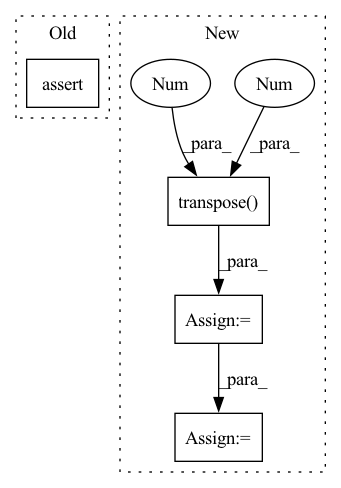

Pattern ID :9194
Before Change
elif n_dims != 3:
raise ValueError("mixture.dim() is expected 3 or 4, but given {}.".format(mixture.dim()))
assert estimated_sources_amplitude.dim() == 4, "estimated_sources_amplitude.dim() is expected 4, but given {}.".format(estimated_sources_amplitude.dim())
ratio = estimated_sources_amplitude / estimated_sources_amplitude.sum(dim=0)
estimated_sources = ratio * mixtureAfter Change
estimated_amplitude = estimated_amplitude.detach().cpu().numpy()
mixture = mixture.transpose(2, 1, 0)
estimated_amplitude = estimated_amplitude.transpose(3 , 2, 1, 0 )
estimated_sources = norbert.wiener(estimated_amplitude, mixture, eps=eps)
estimated_sources = estimated_sources.transpose(3, 2, 1, 0)
estimated_sources = torch.from_numpy(estimated_sources).to(device, dtype)
return estimated_sourcesIn pattern: SUPERPATTERN
Frequency: 3
Non-data size: 4
Instances Fragment ID: 33288698
Project Name: tky823/dnn-based_source_separation
Commit Name: 11a2e82888f76547df72eff58c6a592e3473e65c
Time: 2021-08-20
Author: 40362510+tky823@users.noreply.github.com
File Name: egs/musdb18/d3net/src/adhoc_driver.py
M Class Name: AnonimousClass
N Class Name: AnonimousClass
M Method Name: apply_multichannel_wiener_filter(4)
N Method Name: apply_multichannel_wiener_filter(5)
M Parent Class:
N Parent Class:
M File Name: egs/musdb18/d3net/src/adhoc_driver.py
N File Name: egs/musdb18/d3net/src/adhoc_driver.py
M Start Line: 383
M End Line: 401
N Start Line: 397
N End Line: 413
Before Change
self.final_merge.weight.data = clf_weights
def forward(self, x, **kwargs):
assert x.shape[2] == self.temporal_dim, "invalid number of frames given"
last_frame = x[:, :, -1] // [b, c, h, w]
big_branch = self.big_branch(x).squeeze(2) // [b, c, h, w]
out = self.final_merge(torch.cat([big_branch, last_frame], dim=1))After Change
return out
def forward(self, x, pred_length=1, **kwargs):
x = x.transpose(1 , 2 ) // shape: [b, c, t, h, w]
output_frames = []
for t in range(pred_length):
input = x[:, :, -self.temporal_dim:]
output_frames.append(self.pred_1(input))
return torch.stack(output_frames, dim=1), None
Fragment ID: 33288589
Project Name: ais-bonn/vp-suite
Commit Name: b1ebac921dc35dcaf5e5c3f9fe803c4c9e2d78f8
Time: 2022-01-14
Author: boltres@ais.uni-bonn.de
File Name: vp_suite/models/simple.py
M Class Name: SimpleV2
N Class Name: SimpleV2
M Method Name: forward(3)
N Method Name: forward(2)
M Parent Class: VideoPredictionModel
N Parent Class: VideoPredictionModel
M File Name: vp_suite/models/simple.py
N File Name: vp_suite/models/simple.py
M Start Line: 79
M End Line: 83
N Start Line: 86
N End Line: 92
Before Change
self.cnn.weight.data = clf_weights
def forward(self, x, **kwargs):
assert x.shape[2] == self.temporal_dim, "invalid number of frames given"
return self.cnn(x)
def pred_n(self, x, pred_length=1, **kwargs):After Change
return self.cnn(x)
def forward(self, x, pred_length=1, **kwargs):
x = x.transpose(1 , 2 ) // shape: [b, c, t, h, w]
output_frames = []
for t in range(pred_length):
input = x[:, :, -self.temporal_dim:]
output_frames.append(self.pred_1(input))
return torch.cat(output_frames, dim=2).transpose(1, 2), None
Fragment ID: 33288534
Project Name: ais-bonn/vp-suite
Commit Name: b1ebac921dc35dcaf5e5c3f9fe803c4c9e2d78f8
Time: 2022-01-14
Author: boltres@ais.uni-bonn.de
File Name: vp_suite/models/simple.py
M Class Name: SimpleV1
N Class Name: SimpleV1
M Method Name: forward(3)
N Method Name: forward(2)
M Parent Class: VideoPredictionModel
N Parent Class: VideoPredictionModel
M File Name: vp_suite/models/simple.py
N File Name: vp_suite/models/simple.py
M Start Line: 32
M End Line: 33
N Start Line: 35
N End Line: 41